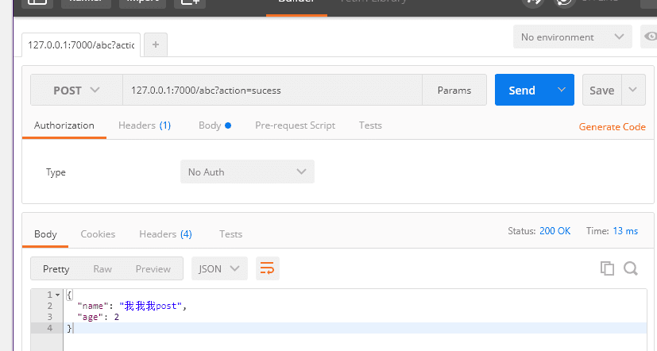
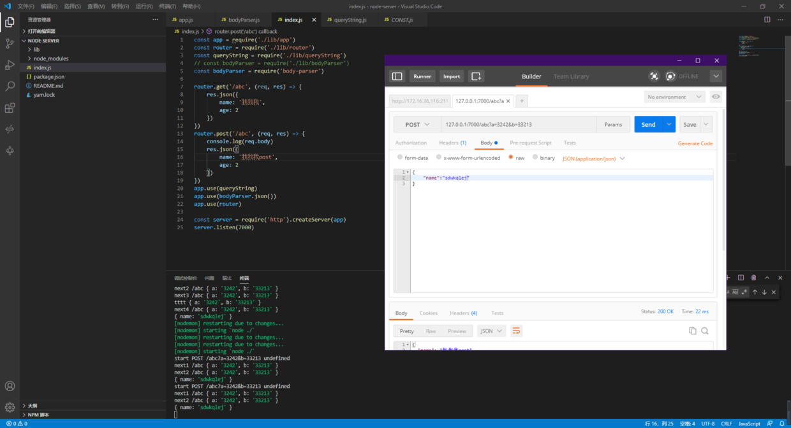

nodejs手写一个httpserver(二、middleware：body-parser,errorhandler)
异常处理
抄袭一下eggjs的error handler做法:https://eggjs.org/zh-cn/tutorials/restful.html#%E7%BB%9F%E4%B8%80%E9%94%99%E8%AF%AF%E5%A4%84%E7%90%86
当程序没有按照我们给定流程运行时，都要判断一下并返回异常错误码，但又不希望每执行一处逻辑都要判断一次。这时候就可以用到try catch 和Error
但上次写的server全部都是异步的 try catch 捕获不到其中的错误，所以要把之前写的server改写成一个异步链,所有中间件function和controller function都使用async await调用。
const app = async (req, res) => {
const ctx = { req, res, json }
// json api
res.json = json
console.log('start', req.method, req.url, req.query)
// 反着给他们帮定next参数
async function next(index) {
await app.actions[index].call(this, req, res, next.bind(ctx, index + 1))
}
await app.actions[0](req, res, next.bind(ctx, 1));
}
app.actions = []
// 实现注册中间件
app.use = (handler) => {
app.actions.push(handler)
}
module.exports = app
// json
function json(object) {
this.writeHeader(200, { 'Content-Type': 'application/json;charset=UTF-8' })
this.write(JSON.stringify(object))
this.end()
}
组成了异步链后，就可以在程序最顶层使用app.use(errorHandler)中间件，包裹一层try catch来捕获内部抛出的异常了
module.exports = async function (req, res, next) {
try {
await next()
} catch (e) {
res.json({
msg: '出错了'
})
}
}
body-parser
当server改成异步调用之后，原先express的body-parser也就不适用了，因为express全部是异步回调的，并没有组成async await异步链。我又看了下koa-bodyparser是async但是传参又和我的app不一样- -，传参是(ctx,next)还是不改了，自己写一下只解析json的bodyparser
// 处理body中的json参数
module.exports = async function (req, res, next) {
try {
req.body = await new Promise(resolve => {
const chunks = [];
req.on('data', buf => {
chunks.push(buf);
})
req.on('end', async () => {
let buffer = Buffer.concat(chunks);
resolve(JSON.parse(buffer.toString()));
})
})
} catch (e) {
console.warn('body-parser error', e)
}
await next()
}
找到获取body值的方法了，监听data事件，会一点一点吧buffer吐给你，只要拼接玩buffer当他是个接送string转string，就可以了，当然也要把这个中间件写成async方法在这个app中才能用
真正的body里并不只有json数据，要是全都自己写还是算了把。。。
抄了一半express一半egg哈哈
测试这条路由和errorhandler
router.post('/abc', async (req, res) => {
if (req.query.action === 'error') {
throw new Error('错了')
}
console.log('???', req.body)
res.json({
name: '我我我post',
age: 2
})
})
body中的json字符串被解析到req.body中了 抛出的异常也被catch到了

